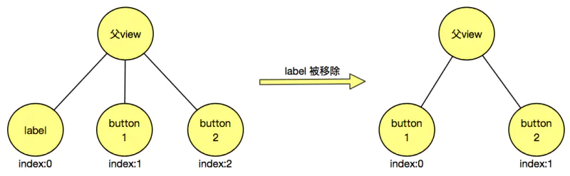
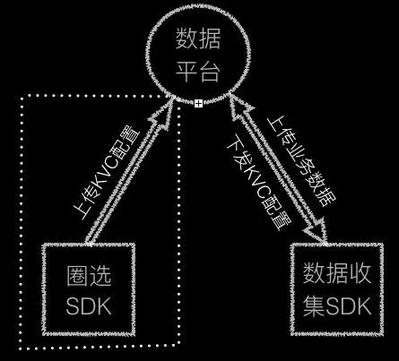
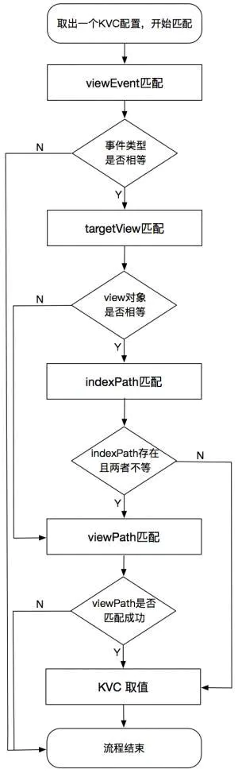

本文为转载。
作者：zerygao
链接：https://www.jianshu.com/p/69ce01e15042
来源：简书
本篇文章是基于 网易乐得无埋点数据SDK 总结而成。负责无埋点数据收集 SDK 的开发已经有半年多了，期间在组内进行过相关分享，现在觉得是时候拿出去和同行们交流下了。本篇主要讲一下SDK的整体实现思路以及关键的技术点。
SDK 已经具备不需要代码埋点就能 自动的、动态可配的、全面且正确 的收集用户在使用 App 时的所有事件数据。除此之外，还单独开发了与之配合的圈选SDK，能够在 App 端完成对界面元素的圈配以及 KVC 配置的上传。而界面元素圈配的工作完全可以交给用研与产品人员来做，减轻了开发人员的工作量。
SDK 已有的功能可以分为两大部分：
- 基本事件数据的收集：基本事件的收集是指应用冷启动事件、页面事件、用户点击事件、
ScrollView滑动事件等，这部分全部都是自动完成的，实现思路会在第一节中介绍。 - 业务层数据的收集：业务层数据的收集是指对与业务功能相关的一些数据，例如：在用户点击提交订单按钮时，收集用户购买的物品以及订单总金额的数据。这种业务层数据的收集以往大多通过 代码埋点 的方式去做，本SDK则真正的实现了
无埋点的去获取这些想要的业务数据。这部分的实现会在本文的第二节详细介绍。
SDK的整体实现思路
SDK 整体采用了 AOP（Aspect-Oriented-Programming）即面向切面编程的思想，就是动态的在函数调用的前后插入数据收集的代码。在 Objective-C 中的实现是基于 Runtime 特性的 Method Swizzling 黑魔法。
SDK 的数据收集功能的实现主要通过 Method Swizzling 来 hook 相应的方法。hook的方法大致可以分为3类：系统类的方法、系统类的Delegate方法、自定义类的方法。
系统类的方法
系统类的方法是指系统框架中提供的基础类的方法，如 UIApplication、UIViewController 等。SDK 在实现某些功能时，需要hook这些类的方法。例如在实现对页面事件的收集时，主要hook了 UIViewController 的生命周期的方法：viewDidLoad、viewDidAppear、viewDidDisappear、dealloc
系统类的 Delegate 方法
系统类的 Delegate 方法主要指 UIKit 框架中提供的 Delegate 中的方法，如 UIScrollViewDelegate、UITableViewDelegate、UIWebViewDelegate 等。SDK 中的大多数功能都是通过hook这些协议中的方法来完成的。例如在实现列表元素点击事件的收集时，主要 hook 了 UITableViewDelegate 中的 tableView:didSelectRowAtIndexPath: 方法。
自定义类的方法
顾名思义，自定义类的方法是指开发人员在工程中自已定义的类，而非系统类的方法。SDK的一些功能是通过hook 这些类的方法来实现。例如在SDK实现对手势操作的事件收集时，需要hook手势对象所指定的target 中的 action 方法，而 target 通常都是自定义类。其实hook系统类的 delegate 方法也可以看成是 hook 自定义类的方法，因为系统类的 delegate 方法大多都是需要在自定义类中实现。
这部分看起来是借助于 AOP 来添加数据收集的代码，但是在真正做的时候，也并没有想的那么简单，涉及到很多细节上的问题，例如：如何将导航栏与系统弹窗的点击事件归属到合适页面中、如何区分UIControlEventValueChanged事件、如何解决hook手势操作引起的性能问题等等。不过这部分内容并不是本篇文章的重点，因此这里不打算多说，之后会单独写一篇文章来讲述遇到的一些坑。
SDK的关键技术的实现
viewPath 及 viewId 的生成及优化
为了对 APP 中某个页面的某个 view 进行数据收集、统计与分析，首先就需要能够唯一的标识与定位这个视图，这可以说是数据收集 SDK 的一个重要前提。那么怎样去唯一的标识 APP 中的某个 view 呢？SDK 中使用了 viewPath 与 viewId 来完成。
1. viewPath 的组成
其实整个 APP 的视图结构可以看成是一颗树（viewTree），树的根节点就是 UIWindow，树的枝干由UIViewController及UIView组成，树的叶节点都是由UIView组成。
那么在viewTree中用什么信息来表示其中任意一个 view 的位置呢？很容易想到的就是使用目标 view 到根之间的每个节点的深度（层次）组成一个路径，而节点的深度（层次）是指此节点在父节点中的 index。这样确实能够唯一的表示此 view 了，但是有一个缺点：它的可读性很差。因此在此基础上又增加了每个节点的名称，节点的名称由当前节点的 view 的类名来表示。
因此，在 viewTree 中，由一个 view 到根节点之间的每个节点的名称与深度（层次）共同组成的信息构成了此 view 的viewPath。另外，由于在做 view 的统计分析时，都是以页面为单位的，因此 SDK 在生成 viewPath 时，只到 view 所在的 UIViewController 级别，而非根部的 UIWindow。这样做也在一定程度上减少了viewPath 的长度。
2. UITableViewCell/UICollectionCell 的深度表示
在 App 开发中，最常用而且最重要的控件就是UITableView与UICollectionView。针对这种可复用视图，里面会包含很多 Cell，而且 Cell 个数也不确定，那么里面的每一个 Cell 应该怎么去表示其深度呢？答案是indexPath。虽然每个 Cell 都可能被复用，但是不同的 Cell 都对应一个唯一的indexPath，因此完全可以使用indexPath值来表示其深度。
3. viewPath 的表示形式与示例
我们已经知道，viewPath就是由各节点的类名与深度组成，那么接下来就使用这些信息来表示出 viewPath。下面结合一个具体的示例来简单说一下，我随便从项目中找了一个：
路径中各个节点的类名是：
1 | HYGHallSlideViewController-UIScrollView-HYGHallProductTableView-UITableViewWrapperView-HYGHallProductCell-UITableViewCellContentView-HYGHallProductView。 |
路径中各个节点的深度是：0-0-1-0-0:2-0-1
接下来就是将这两者放到一起来构成 viewPath，SDK 的表示方式如下：
1 | viewPath：HYGHallSlideViewController-UIScrollView-HYGHallProductTableView-UITableViewWrapperView-HYGHallProductCell-UITableViewCellContentView-HYGHallProductView & 0-0-1-0-0:2-0-1 |
其实就是使用 & 连接符简单的拼接到一起。这样做可以方便将两者组合与分离开，便于后面的viewPath匹配。另外，网上还有一种类似于 xPath 的表示方式：
1 | HYGHallSlideViewController[0]/UIScrollView[0]/HYGHallProductTableView[1]/UITableViewWrapperView[0]/HYGHallProductCell[0:2]/UITableViewCellContentView[0]/HYGHallProductView[1] |
不过个人觉得xPath的方式稍微复杂了点，在组合以及拆分上都相对麻烦些。不过话说回来，viewPath的形式是次要的，大家可以按照各自喜欢的方式去表示就行，无须纠结于哪种形式更好。
4.针对 viewPath 的优化
4.1 优化节点的深度的计算方式
上面提到在计算各节点的深度时，是采用当前 view 位于其父 view 中的所有子 view 中的 index 值。不过在实际的开发中，viewTree 有时候会根据用户的操作有所变动。仍然举个栗子：
- 假设一个 UIView 中有三个子 view，先后加入的顺序是：label、button1、button2，按照之前的计算方式，这 3 个子 view 的深度依次是：0、1、2。这时候用户点击了一个按钮，label1 从父 view 中被移除了。此时 UIView 只有 2 个子view：button1、button2，而且深度变为了：0、1。如图所示：

可以看出仅仅由于其中一个子view 被移除，却导致其它子 view 的深度都发生了变化。因此，SDK 为了在新增/移除某一 view 时，尽量减少对已有 view 的深度的影响，调整了对节点的深度的计算方式：采用当前 view 位于其父 view 中的所有 同类型 子 view 中的index 值。
我们再看一下上面的这个例子，最初 label、button1、button2 的深度依次是：0、0、1。在 label 被移除后，button1、button2 的深度依次为：0、1。可以看出，在这个例子中，label 的移除并未对 button1、button2 的深度造成影响，这种调整后的计算方式在一定程度上增强了 viewPath 的抗干扰性。
另外，调整后的深度的计算方式是依赖于各节点的类型的，因此，此时必须要将各节点的名称放到viewPath中，而不再是仅仅为了增加可读性。
4.2 viewPath 针对 Swift 的优化
众所周知，Swift文件在获取其类名时，会自动添加此文件所在的Module名前缀：如果Swift文件在主工程中，则会添加工程的名字；如果是在某个组件中，并且项目开启了 use frameworks! 选项，则会添加组件的名字。总的来说，在含有swift 的项目中（包括纯 swift/OC 与 swift 混编），viewPath中会包含各 Swift 文件的ModuleName，那么在如下情况下：
- 某个 OC 文件被使用 Swift 重写了
- 某个 Swift 文件被从主工程移至某个组件库中，或者从组件库移至主工程中
- 主工程在引用组件库时，在开启与关闭
use frameworks!之间进行切换
上述3种情况下，文件的类名都会由于ModuleName而发生变化，进而会导致 viewPath 的改变，工程文件在结构上的调整都可能会直接对viewPath造成影响。
实际开发中，特别是对于较老的OC项目，经常会对项目的OC文件使用Swift重写。因此 SDK 有必要去避免viewPath因为这类情况而发生变化。
其实这个问题的解决方案很简单，既然是由于类名中的ModuleName前缀的改变造成的，那么就干脆在生成viewPath时，去掉所有的Swift的ModuleName前缀。这种做法能够解决对viewPath的影响，但是细心的人可能会意识到另一个隐藏的问题：如果在不同的组件库中，两个不同的视图或控制器具有相同的名字（在Swift中是允许的，因为有Module进行区分），这种情况下，viewPath是否存在无法区分的情况？
其实经过仔细考虑，这个担忧有点多余，因为就算两个Module中的视图或控制器名字一样，但是他们里面的视图结构会有所不同，进而深度也不一样，viewPath也不会完全相同。
4.3 在包含子VC时，优化VC的深度的计算
前面提到，viewPath只表示到距离 view 最近的一个 VC，VC 的深度的计算也是此 VC 的 view 所在的父 view 的所有子 view 中的深度。在实际的 iOS 开发中，可能会经常使用addChildViewController:添加多个子 VC 来实现复杂的页面，但是在包含子 VC 时，VC 的深度计算就有可能会存在问题。还是举一个简单的栗子：
- 假设一个 containerVC 中包含4个子VC：VC1、VC2、VC3、VC4。在每个子VC首次被展示时，子VC会先被add进来，而子 VC 的 view 也会被 add 到一个scrollView 上。这时候这几个子VC首次的查看顺序的不同将会导致它们的深度的变化：如果查看顺序是：VC1、VC2、VC3、VC4，那么它们的深度依次 为：VC1（0）、VC2（1）、VC3（2）、VC4（3）；如果查看顺序是：VC3、VC1、VC4、VC2，深度则变成了：VC1（1）、 VC2（3）、VC3（0）、VC4（2）。这种情况导致
viewPath不可靠且无法保证唯一性。
SDK 为了解决上述情况，调整了 VC 的深度的计算：不再采用其 view 的深度，而是直接使用固定的0。因为 VC 已经是viewPath的根级别了，它的深度信息已经不重要了。
不过这种方案会引起另一个小问题，如果上述子 VC 的 VC1 和 VC2 是同一个类的不同实例，那么他们内部的视图结构是完全一样的，这时候如果使用固定的 VC 深度（0），通过viewPath就无法区分具体是哪个子 VC 的 view 了。针对这种同一类的不同实例，如果想进一步区分它们，SDK 采用了另一个方案：页面别名。
5. viewId 的生成
viewPath 已经能够唯一标识某个 view 了，为何还需要viewId呢？其实主要原因是：viewPath 的长度不固定，而且一般都会比较长，不便于后台使用它作为 view 的唯一标识。因此 SDK 使用viewPath信息通过MD5加密生成一个固定长度的值作为viewId。
6. viewPath 与 viewId 重复时的解决方案
经过对viewPath的优化，SDK 已经尽可能的保证了viewPath的稳定性。但是并不表示只依靠viewPath就能区分所有的点击事件。有时同一个viewPath的 view 具有不同的表现形式与作用，例如下面的情况：
- 同一个按钮在不同的状态下，显示不同的文字。例如：一个按钮在未添加商品前显示“添加”；添加了商品之后，立刻显示成“清除”
- 同一个view上具有多处点击事件，例如 SegmentControl、
UISwitch、UIStepper等
上面的这2种情况，都是同一个viewPath对应多个事件，此时如果只使用viewPath无法区分出不同的状态或事件。
针对这类问题，SDK 的解决方案是：viewPath + “其它信息” 。这里的 “其它信息” 是视不同情况而定的，比如: 在上面的情况1中，“其它信息” 就是按钮的 title。在情况2中，“其它信息” 是 SegmentControl 的 selectedIndex 和 UISwitch 的 isOn 属性的值。SDK 在进行数据收集时，会上传 view 的这些信息，再结合圈选SDK就能让后台在做统计时区分出这些不同的事件了。
关于“其它信息”，再补充一点，除了 SDK 事先知道要获取的信息之外，还有一类就是业务数据。例如：有一个商品列表页，每一行显示一个商品，如果后台想统计的不是列表中每一行的点击，而是每个商品 的点击，那么此时的“其它信息”就应该是productId 了。关于 SDK 对业务层数据的获取与上报请看下面的介绍。
SDK无埋点业务数据收集的实现
讲完了 viewPath 之后，接下来详细介绍下 SDK 的另一个关键技术：基于 viewPath 与 KVC 实现 SDK 的无埋点业务数据收集功能。首先，先简单分析一下传统的 代码埋点 存在的缺点，大致有以下几个：
- 埋点代码与业务逻辑代码混合在一起，增加了代码的维护成本；
- 埋点代码需要跟随APP版本一起发布，耽误数据的收集与统计；
- 埋点时存在错埋、漏埋等情况，无法动态更新及添加；
为了解决上述的 代码埋点 的缺陷，SDK 实现了真正意义上的 无埋点 来对业务数据进行收集。
1. 无埋点的实现架构
SDK 的无埋点功能的实现主要依赖于 viewPath 与 KVC。viewPath前面已经介绍了，它主要用于标识viewTree中的某个 view。而KVC对于 iOS 开发者也不陌生，堪称 iOS 开发中的黑魔法之一。通过KVC我们能够通过 key 或 keyPath 直接访问对象的属性，而不需要调用明确的存取方法。关于KVC如果不太了解，请自行学习，这里不再过多阐述。
那么如何实现不需要代码埋点就能随意获取想要的业务数据呢？先看一下 SDK 的无埋点技术的整体架构图：

从上图可以看出，在实现 SDK 的无埋点数据收集时，主要分为3步：上传KVC配置、请求KVC配置、业务数据的收集与上报。
2. 什么是 KVC 配置
在上图中出现了 KVC配置，那么下面先简单介绍下什么是KVC配置。其实 KVC配置 就是一些用来描述 App 应该在什么时机去收集什么数据的信息，包含的主要信息有：
- appKey：用来标识是哪个应用
- appVersion：用来标识应用的版本号
- viewEvent：标识某个事件类型（收集时机），例如：ButtonClick、ListItemClick、ViewTap等
- viewPath：目标 view 在
viewTree中的信息 - keyPath：目标 view 与要收集的业务数据间的关联路径，用于KVC取值
- keyName：为要收集的业务数据定义一个key，最终组成 key-value 的形式上报。用于区分多个收集的数据
3. KVC配置的上传与下发
- 上传KVC配置
- 利用 圈选SDK 上传 KVC配置 的操作对于用户是透明的，主要由开发人员进行上传与管理。此操作可以在任何时候进行，在想要收集某个或某些版本的 App 中的业务数据时，上传相应的KVC配置信息至后台即可，达到了根据需要动态可配的效果。
- 请求KVC配置
- SDK 在初始化时会触发 KVC配置 的请求操作，从后台拉取 App 当前版本对应的所有KVC配置，并将请求结果缓存起来，以提供给下一步使用。
4. 业务数据的收集与上报
这一部分是 SDK 无埋点技术的核心，接下来详细介绍这部分的实现逻辑。它的实现流程如下：

这个环节的核心是基于viewPath的 view 匹配，主要实现是通过循环遍历viewPath的每个节点的信息与当前 view 及其父view 依次进行匹配。因此这一步会产生一定的时间与性能消耗。为了尽可能减少这部分的操作，SDK 中使用了一些方式进行优化，其中一个就是基于缓存view的优化。
4.1 基于缓存view的优化
SDK 采用缓存上一次匹配成功的 view 信息的方式，来减少一些不必要的viewPath匹配操作。这里主要缓存的 view 信息有：
- targetView：上一次通过
viewPath匹配成功的 view 对象。 - indexPath： 上一次通过
viewPath匹配成功的 view 的indexPath，如果没有则为nil。
1. viewEvent 匹配
第一步先进行事件类型的匹配。如果KVC配置信息指定的 viewEvent 是 ButtonClick，那么可以轻松的过滤掉 ListItemClick、ViewTap 等其它事件。这一步能够过滤一大部分事件，只有事件类型匹配成功才继续进行下一步。
2. targetView 匹配
接下来就是将缓存的 targetView 与当前 view 进行比较。如果两者指向同一对象，则进行第3步，否则直接进入第4步
3. indexPath 匹配
有人可能不明白为何要添加这一步呢？其实这一步也很重要，是对第2步的补充，主要是用来处理 Cell 可复用性的情况。
如果第2步中缓存的 targetView 是 Cell 或 Cell 中的某个 subview，那么第2步的匹配成功，并不能保证当前 view 就是我们真正想匹配的 view。这个可能不太容易理解，还是举个简单的例子来说明一下：
- 假如一个 Cell 中有一个 button，在第1行的 button 被点击时，通过
viewPath匹配成功 了，那么这时 targetView 缓存了第1行的 button 对象。接下来向下滑动列表，第一行被划出屏幕，第10行划入屏幕，同时第10行复用了第1行的 Cell，这时再点击 button 去匹配时，由于 Cell 复用的原因，targetView 与当前 button 肯定指向同一个对象，但是却不是我们真正想匹配的第1行的 button。可以看出：在有 Cell 复用的情况下，无法确定第2步的结果一定正确。
因此，在第2步的基础上又增加了indexPath匹配。indexPath的匹配逻辑为：如果缓存的indexPath不为nil并且与当前view的indexPath不相等，则进入第4步；否则表明当前的 view 就是上次刚刚匹配成功的，也就没必要进行viewPath匹配，可以直接进入第5步。
4. viewPath 匹配
这一步就是对当前的 view 及其父view 与KVC配置中的viewPath的各个节点进行逐个匹配。由于是一个循环操作，因此会有一定的时间消耗，其实在这部分的匹配中，也做了一些简单的优化。在真正进入循环匹配之前，先进行如下3步判断：
- 判断 view 类名是否相等；
- 判断 view 所在的 viewController 类名是否相等；
- 判断 view 所在的 window 类名是否相等；
上述的3个判断也能过滤很多不必要的匹配。只有这3个判断均通过后，才进行viewPath循环匹配。
5. KVC 取值与上报
到了这一步，就已经验证了数据收集的时机是正确的。接下来就可以直接使用 KVC配置信息中的keyPath调用 valueForKeyPath: 方法获取对应的值。如果值不为nil，就与 keyName 组成一个键值对，放到当前的事件数据中一起上报上去。这样后台就可以通过key去查找到相应的业务数据了。
上面只是简要介绍了一下匹配时的逻辑，在实际开发中还会添加对 cell 的indexPath通配的情况的处理，由于文章篇幅这里不再详细讲解。
5. 增加对 KVC 的异常处理
SDK 的无埋点功能的实现其实主要依赖于KVC，但是众所周知，KVC是非常危险的，很容易造成程序崩溃。例如一旦 key 或 keyPath 所对应的属性名不存在，立刻会导致程序抛出一个NSUndefinedKeyException异常，如果应用没有处理此异常，程序就会Crash。
因此，为了避免程序Crash，SDK 内部增加了对KVC异常的处理。具体实现是给 NSObject 增加一个 Category ，重写 valueForUndefinedKey: 方法，并在方法中return nil。
1 | @implementation NSObject (KVCExceptionHandler) |
其它关键技术
当然，SDK 的实现中还有很多关键技术点，比如：SDK 对 RN 页面的数据收集、页面别名方案的实现、Method Swizzling与Aspects的兼容等。由于本文的篇幅已经很长了，而且考虑到大家读文章的耐性都不会太长，所以这里就先不讲解了，后续会再写文章单独介绍。
END
文章写了这么多，其实主要介绍了 SDK 中的两个关键技术点，希望对你们能有一些参考价值。另外，如果有人对本文的方案有更好的建议，欢迎一起讨论学习。
最后，要特别感谢我的同事王佳乐，由于他对文章的排版与校对工作，才使得本文能更好的展示给大家。同时也要感谢组内的所有同事，在我开发遇到困难时，给予了我很多的帮助。
Q & A
关于对本文内容提出的一些问题，将全部记录在这里（简书评论里的除外），并进行统一解答。
Q1: SDK 都使用KVC配置获取业务数据，是否会增加维护KVC配置的工作？
A1: 会有对 KVC配置 的维护与管理工作，不过 SDK 也简化了这块的管理工作。
一般来说，上传的所有的 KVC配置 需要与 App 的版本相对应，因为 App 版本不同会直接导致keyPath可能不一样。所以与 KVC配置 相关的工作有如下2个：
- 针对当前 App 版本上传相应的 KVC配置，以获取想要的业务数据
- 当 App 新版本发布时，需要对之前版本上的 KVC配置 逐一验证，是否仍然适用于新版本。如果仍然适用，则直接在管理后台上把新的版本号添加到此 KVC配置；如果不再适用，则对新版本再上传一个新的KVC配置。
从上面可以看出，在 App 版本不断迭代的过程中，KVC配置 会越来越多，相应的维护与管理工作也相当繁琐。
为了解决这个痛点，SDK 中增加了一种方案来避免这种重复且繁琐的工作。具体的方案是：
- 在上传 KVC 配置时，指定某个区间的版本，或者不指定具体的版本（即应用到当前所有版本上）；
- SDK 在使用KVC配置获取业务数据失败时，添加相关的错误日志，并上报上去。其中错误日志里包含了
appKey、appVersion、keyPath等信息，这样就能在后台清晰的看到哪些 KVC配置 在哪个 App 版本上存在问题； - 使用脚本监控与
KVC相关的错误日志。如果监控到有错误日志上报，则发送邮件通知给相关人员；
因此，SDK 采用此方案优化之后，KVC配置 的管理工作就只有1个了：
- 根据Log信息快速找到对应的 KVC配置，并上传一个针对新版本的 KVC配置
Q2: 对于 “内容与位置” 可能会随时间而变动时，如何实现数据收集与统计？
A2: 使用圈选SDK与数据SDK共同完成动态数据的收集与统计
这个问题在实际产品中也比较常见，比如 App 首页的内容大多是通过后台配置的。
这个问题其实可以转化或分解成如下的2个情况：
- 同一位置会显示不同的内容
- 同一内容会显示在不同的位置
注意，这2个并非同一个，它们分别对应于不同的场景，同时数据收集的方案也有所不同。
另外，“位置” 可以是在列表中，也可以是非列表中的，不过这个对整体的方案没有太大影响，仅仅是在不关心位置时viewPath中的通配符位置不同。
A2.1 同一位置显示不同的内容
例子：在 App 首页有一个展示最近活动的位置，先展示活动1的图片，过一段时间运营人员又配成活动2的图片。如何统计活动1、活动2各自的点击量？
针对这种场景，SDK 的解决方案是：“关心位置” + “关心内容”。
“关心位置” 的意思是只使用当前的位置，具体表现是viewPath中不包含任何通配符；“关心内容” 的意思是指定一个想要统计的内容。
整个过程可以分解为如下3个环节：
- 圈选SDK上传“关心位置”的KVC配置。KVC配置中指定获取活动的
url的keyPath。 - 数据SDK在活动发生点击时，收集当前活动对应的
url，并跟随点击事件一起上报。 - 圈选SDK上传“关心位置” + “关心内容”的圈选配置，关心的内容指定为想要统计的活动的
url值。
A2.2 同一内容显示在不同的位置
例子：App 首页有4个固定的入口，假设其中一个叫“热门推荐”，那么根据后台配置的顺序不同，“热门推荐”可能被显示在4个位置中的任何1个，即一段时间显示在第1个，过一段时间可能显示在第2个位置。这时如何统计出“热门推荐”的点击量？
针对这种场景，SDK 的解决方案是：“不关心位置” + “关心内容”。
“不关心位置” 是指viewPath中含有通配符，用于表示viewTree中的多个位置。例如想要匹配列表所有行时，则将viewPath中的indexPath替换为通配符。
这个问题的解决过程也分为如下3步：
- 圈选SDK上传“不关心位置”的KVC配置。KVC配置中指定获取入口的 title 的
keyPath。 - 数据SDK在4个中任何一个入口被点击时，都去收集入口的 title，并跟随点击事件一起上报。
- 圈选SDK上传“不关心位置” + “关心内容”的圈选配置，关心的内容指定为“热门推荐”。
到这里，数据收集与圈选配置的工作都已经做完了，接下来就是后台的数据统计了。
上述2种情况对后台进行统计没有区别，都使用一个统计方案，这里也介绍一下后台大概的统计思路：
- 拿到第3步中上传的圈选配置，根据
viewPath与 “关心的内容” 生成一个正则表达式，然后从数据 SDK 上报的原始数据中进行正则匹配，进而统计出相应数据。